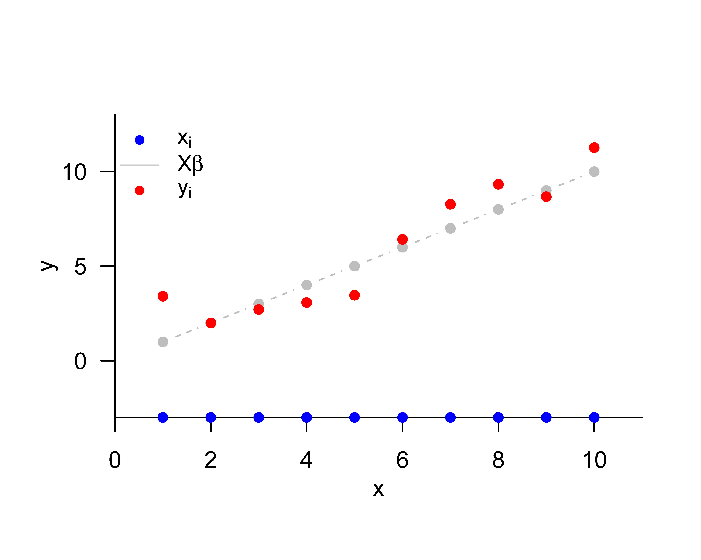

# model formulation
library(MASS) # multivariate normal distribution
set.seed(0) # random number generator seed
n = 12 # number of data points
p = 1 # number of beta parameters
X = matrix(rep(1,n), nrow = n) # design matrix
I_n = diag(n) # n x n identity matrix
beta = 2 # true, but unknown, beta parameter
sigsqr = 1 # true, but unknown, variance parameter
# data realization
y = mvrnorm(1, X %*% beta, sigsqr*I_n) # one realization of an n-dimensional random vector36 Model formulation
36.1 General theory
We define the general linear model (GLM) as follows.
Definition 36.1 (General linear model) Let \[ y = X\beta + \varepsilon \tag{36.1}\] where
- \(y\) is an \(n\)-dimensional observable random vector, called the data,
- \(X \in \mathbb{R}^{n \times p}\) for \(n>p\) and \(\mbox{rank}(X)=p\) is a matrix, called the design matrix,
- \(\beta \in \mathbb{R}^{p}\) is an unknown parameter vector, called the beta-parameter vector,
- \(\varepsilon\) is an \(n\)-dimensional unobservable random vector, called the random error, for which it is assumed that, with an unknown variance parameter \(\sigma^{2}>0\), \[\begin{equation} \varepsilon \sim N\left(0_{n}, \sigma^{2} I_{n}\right) \end{equation}\]
Then Equation 36.1 is called the general linear model (GLM).
In Equation 36.1, we refer to \(X\beta \in \mathbb{R}^{n}\) as the deterministic aspect of the GLM and to \(\varepsilon\) as the probabilistic aspect of the GLM. The GLM thus postulates that data arise by adding a deterministic aspect \(X\beta \in \mathbb{R}^{n}\) and a multivariate normally distributed probabilistic aspect \(\varepsilon\). Note that \(X\beta \in \mathbb{R}^{n}\) is an \(n\)-dimensional vector and \(\varepsilon\) is an \(n\)-dimensional random vector. The resulting vector \(y\) is a random vector because it results from adding the random vector \(\varepsilon\) to the vector \(X\beta \in \mathbb{R}^{n}\). The GLM is thus a probabilistic model in which datasets represented by \(y\) are modeled. From a generative perspective, in the GLM a dataset \(y \in \mathbb{R}^{n}\) arises as a realization of \(y\) by adding the deterministic model aspect and an unobservable realization \(e \in \mathbb{R}^{n}\) of \(\varepsilon\), \[\begin{equation} y=X\beta+e \end{equation}\] with \(y \in \mathbb{R}^{n}, X\beta \in \mathbb{R}^{n}\), and \(e \in \mathbb{R}^{n}\).
The total number of parameters of the GLM is \(p+1\), consisting of \(p\) scalar beta parameters and one variance parameter \(\sigma^{2}\). The beta-parameter vector \(\beta \in \mathbb{R}^{p}\) is also called a weight vector or effect vector. Its entries weight the entries of the columns of the design matrix \(X \in \mathbb{R}^{n \times p}\) in generating the deterministic model aspect \(X\beta \in \mathbb{R}^{n}\). The columns of the design matrix are named differently in different contexts; common terms are, for example, predictors, regressors, or covariates. In general, the columns of the design matrix model independent variables, and the data vector models dependent variables.
Note that the covariance-matrix parameter of \(\varepsilon\) is assumed to be spherical. It follows directly that \(\varepsilon_{1}, \ldots, \varepsilon_{n}\) are independent normally distributed random variables with identical variance parameter. Because the expectation parameter of \(\varepsilon\) is additionally assumed to be \(0_{n} \in \mathbb{R}^{n}\), the \(\varepsilon_{1}, \ldots, \varepsilon_{n}\) are also identically normally distributed random variables. If \(x_{ij} \in \mathbb{R}\) denotes the \(ij\)th element of the design matrix \(X \in \mathbb{R}^{n \times p}\), then, for each component \(y_{i}, i=1, \ldots, n\) of \(y\), Equation 36.1 implies that \[\begin{equation} y_{i} = x_{i 1}\beta_{1} + x_{i2}\beta_{2} + \cdots + x_{ip}\beta_{p} + \varepsilon_{i} \mbox{ with } \varepsilon_{1},\ldots,\varepsilon_{n} \sim N\left(0, \sigma^{2}\right). \end{equation}\] We record the distribution of the data vector \(y\) implied by Equation 36.1 in the following theorem.
Theorem 36.1 (Data distribution of the general linear model) Let \[\begin{equation} y=X\beta+\varepsilon \mbox{ with } \varepsilon \sim N\left(0_{n},\sigma^{2} I_{n}\right) \end{equation}\] be the GLM. Then \[\begin{equation} y \sim N\left(\mu, \sigma^{2} I_{n}\right) \mbox{ with } \mu:=X\beta \in \mathbb{R}^{n} \end{equation}\]
Proof. By the theorem on linear-affine transformations of multivariate normal distributions, for \[\begin{equation} \varepsilon \sim N\left(0_{n}, \sigma^{2} I_{n}\right) \mbox{ and } y := I_{n} \varepsilon + X\beta, \end{equation}\] we have \[\begin{equation} y \sim N\left(I_{n} 0_{n}+X\beta, I_{n}\left(\sigma^{2} I_{n}\right) I_{n}^{T}\right) = N\left(X\beta, \sigma^{2} I_{n}\right). \end{equation}\] With the definition \(\mu:=X\beta \in \mathbb{R}^{n}\), the statement of the theorem follows directly.
In the GLM, the data \(y\) are therefore an \(n\)-dimensional normally distributed random vector with expectation parameter \(\mu=X\beta \in \mathbb{R}^{n}\) and covariance-matrix parameter \(\sigma^{2} I_{n} \in \mathbb{R}^{n \times n}\). The GLM is thus a multivariate normal distribution whose expectation parameter is parameterized by means of a design matrix and a beta-parameter vector. Moreover, the components \(y_{1}, \ldots, y_{n}\) of \(y\), that is, the random variables that model scalar data points, are independent normally distributed random variables of the form \[\begin{equation} y_{i} \sim N\left((X\beta)_{i}, \sigma^{2}\right) \mbox{ for } i=1, \ldots, n. \end{equation}\] Because, however, \((X\beta)_{i} \neq(X\beta)_{j}\) generally holds for \(i \neq j\), the \(y_{i}, i=1, \ldots, n\) are generally not identically distributed. The scenario of independent and identically normally distributed random variables can, of course, be formulated as a special case of the GLM.
Example (1) Independent and identically normally distributed random variables
We consider the scenario of \(n\) independent and identically normally distributed random variables with expectation parameter \(\mu \in \mathbb{R}\) and variance parameter \(\sigma^{2}\), \[ y_{1}, \ldots, y_{n} \sim N\left(\mu, \sigma^{2}\right). \tag{36.2}\] Then Equation 36.2 is equivalent to \[\begin{equation} y_{i} = \mu+\varepsilon_{i}, \varepsilon_{i} \sim N\left(0, \sigma^{2}\right) \mbox{ for } i=1, \ldots, n \mbox{ with independent } \varepsilon_{i}. \end{equation}\] In matrix notation, this is in turn equivalent to the GLM special case \[\begin{equation} y \sim N\left(X\beta, \sigma^{2} I_{n}\right) \mbox{ with } X:=1_{n} \in \mathbb{R}^{n \times 1}, \beta:=\mu \in \mathbb{R}^{1}, \sigma^{2}>0. \end{equation}\] In R, realizations of the GLM can easily be obtained using a random-number generator for multivariate normal distributions by specifying the corresponding expectation and covariance parameters. The following R code shows how \(n\) independent and identically normally distributed scalar data points can be realized in the sense of the GLM. Note that \(n\) scalar data points correspond to one realization of the GLM.
Realizations: 1.2 2.76 4.4 1.99 1.71 1.07 0.46 2.41 3.27 3.33 1.67 3.26Example (2) Simple linear regression
We consider the generative model of simple linear regression \[\begin{equation} y_{i}=\beta_{0}+\beta_{1} x_{i}+\varepsilon_{i}, \varepsilon_{i} \sim N\left(0, \sigma^{2}\right) \mbox{ for } i=1, \ldots, n \text {, } \end{equation}\] We have already seen that this model is equivalent to the normal-distribution model of regression \[\begin{equation} y_{i} \sim N\left(\mu_{i}, \sigma^{2}\right) \mbox{ with } \mu_{i}:=\beta_{0}+\beta_{1} x_{i} \mbox{ for } i=1, \ldots, n. \end{equation}\] In matrix notation, this is in turn equivalent to the GLM special case \[ y \sim N\left(X\beta, \sigma^{2} I_{n}\right) \mbox{ with } X:=\left(\begin{array}{cc} 1 & x_{1} \\ 1 & x_{2} \\ \vdots & \vdots \\ 1 & x_{n} \end{array}\right) \in \mathbb{R}^{n \times 2}, \beta:=\left(\begin{array}{c} \beta_{0} \\ \beta_{1} \end{array}\right) \in \mathbb{R}^{2}, \sigma^{2}>0. \tag{36.3}\] R code for simulating realizations of a simple linear regression therefore has a very similar structure to the R code above for simulating realizations of \(n\) independent and identically normally distributed random variables.
# model formulation
library(MASS) # multivariate normal distribution
set.seed(0) # random number generator seed
n = 10 # number of data points
p = 2 # number of beta parameters
x = 1:n # predictor values
X = matrix(c(rep(1,n),x), nrow = n) # design matrix
I_n = diag(n) # n x n identity matrix
beta = matrix(c(0,1), nrow = p) # true, but unknown, beta parameter
sigsqr = 1 # true, but unknown, variance parameter
# data realization
y = mvrnorm(1, X %*% beta, sigsqr*I_n) # one realization of an n-dimensional random vectorRealizations: 3.4 1.99 2.71 3.07 3.46 6.41 8.27 9.33 8.67 11.26We visualize the above realization in Figure 36.1.

36.2 Identifiability and estimability
Above, we saw that the data distribution of the GLM is given by \[\begin{equation} y \sim N\left(\mu, \sigma^{2} I_{n}\right) \mbox{ with } \mu:=X\beta \in \mathbb{R}^{n} \mbox{ for } X \in \mathbb{R}^{n \times p}, \beta \in \mathbb{R}^{p}. \end{equation}\] The GLM is therefore a multivariate normal distribution with a special expectation-parameterization. To introduce the concepts of identifiability and estimability in the context of GLMs, it is helpful first to generalize the concept of a parameterization of a multivariate normal distribution somewhat.
Definition 36.2 (Beta parameterization) Let \(N\left(\mu, \sigma^{2} I_{n}\right)\) be a multivariate normal distribution with spherical covariance-matrix parameter. We then call a multivariate, vector-valued function of the form \[\begin{equation} f: \mathbb{R}^{p} \rightarrow \mathbb{R}^{n}, \beta \mapsto f(\beta)=: \mu \end{equation}\] a beta parameterization of \(\mu\).
The GLM is evidently based on the design-matrix-dependent beta parameterization \[\begin{equation} f: \mathbb{R}^{p} \rightarrow \mathbb{R}^{n}, \beta \mapsto f(\beta):=X\beta. \end{equation}\] Using the concept of beta parameterization, we can now formulate the concept of beta-parameter identifiability:
Definition 36.3 (Beta-parameter identifiability) Let \(N\left(\mu, \sigma^{2} I_{n}\right)\) be a multivariate normal distribution with spherical covariance-matrix parameter, and let \(f\) be a beta parameterization of \(\mu\). \(\beta\) is called identifiable if and only if, for arbitrary \(\beta_{1}, \beta_{2} \in \mathbb{R}^{p}\), it holds that \(f\left(\beta_{1}\right)=f\left(\beta_{2}\right)\) implies \(\beta_{1}=\beta_{2}\).
The beta parameters of general linear models whose design matrix has full rank are identifiable. This is the statement of the following theorem:
Theorem 36.2 (Beta-parameter identifiability under full design-matrix rank) Let \(y \sim N\left(X\beta, \sigma^{2} I_{n}\right)\) be the data distribution of a GLM with \(\mbox{rank}(X)=p\). Then \(\beta\) is identifiable.
Proof. For \(X \in \mathbb{R}^{n \times p}\), \(\mbox{rank}(X)=p\) implies that \(\left(X^{T} X\right) \in \mathbb{R}^{p \times p}\) is an invertible matrix. It then follows, for arbitrary \(\beta_{1}, \beta_{2} \in \mathbb{R}^{p}\), that \[\begin{equation} \begin{aligned} f\left(\beta_{1}\right) = f\left(\beta_{2}\right) & \Leftrightarrow X\beta_{1}=X\beta_{2} \\ & \Leftrightarrow X^{T} X\beta_{1}=X^{T} X\beta_{2} \\ & \Leftrightarrow\left(X^{T} X\right)^{-1} X^{T} X\beta_{1}=\left(X^{T} X\right)^{-1} X^{T} X\beta_{2} \\ & \Leftrightarrow \beta_{1}=\beta_{2}. \end{aligned} \end{equation}\]
For the analysis of estimable functions, we also need the concept of identifiability of vector-valued functions of the beta parameters. We define:
Definition 36.4 (Identifiability of functions of the beta parameters) Let \(N\left(\mu, \sigma^{2} I_{n}\right)\) be a multivariate normal distribution with spherical covariance-matrix parameter, and let \(f\) be a beta parameterization of \(\mu\). Furthermore, let \[\begin{equation} g: \mathbb{R}^{p} \rightarrow \mathbb{R}^{k}, \beta \mapsto g(\beta) \end{equation}\] be a function of the beta-parameter vector. \(g\) is called identifiable if and only if, for arbitrary \(f\left(\beta_{1}\right), f\left(\beta_{2}\right) \in \mathbb{R}^{n}\), \(f\left(\beta_{1}\right)=f\left(\beta_{2}\right)\) implies \(g\left(\beta_{1}\right)=g\left(\beta_{2}\right)\).
Estimable functions are linear functions of \(\beta\) that are identifiable. In general, the following theorem holds:
Theorem 36.3 (Identifiable beta-parameter functions) Let \(N\left(\mu, \sigma^{2} I_{n}\right)\) be a multivariate normal distribution with spherical covariance-matrix parameter, and let \(f\) be a beta parameterization of \(\mu\). Furthermore, let \[\begin{equation} g: \mathbb{R}^{p} \rightarrow \mathbb{R}^{k}, \beta \mapsto g(\beta) \end{equation}\] be a function of the beta-parameter vector. The function \(g\) is identifiable if and only if \(g\) is a function of \(f\), that is, if there exists a function \(\phi\) such that \[\begin{equation} g = \phi \circ f \end{equation}\]
Proof. We show the statement only in one direction. \(\Rightarrow\) We assume that there exists a function \(\phi\) such that \[\begin{equation} g=\phi \circ f . \end{equation}\] Then the fact that a function assigns exactly one function value to an argument implies that \[\begin{equation} f\left(\beta_{1}\right)=f\left(\beta_{2}\right) \Leftrightarrow \phi\left(f\left(\beta_{1}\right)\right)=\phi\left(f\left(\beta_{2}\right)\right) \Leftrightarrow g\left(\beta_{1}\right)=g\left(\beta_{2}\right) \end{equation}\] Thus \(g\) is identifiable, because \(f\left(\beta_{1}\right)=f\left(\beta_{2}\right)\) implies \(g\left(\beta_{1}\right)=g\left(\beta_{2}\right)\).
As mentioned above, estimable functions are linear functions of \(\beta\) that are identifiable. The classical definition of an estimable function is the following.
Definition 36.5 (Estimable function) Let \(N\left(X\beta, \sigma^{2} I_{n}\right)\) be a GLM. Then a linear function \[\begin{equation} g: \mathbb{R}^{p} \rightarrow \mathbb{R}^{k}, \beta \mapsto g(\beta):=C^{T} \beta \end{equation}\] with \(C \in \mathbb{R}^{p \times k}\) is called estimable if there exists a matrix \(P \in \mathbb{R}^{n \times k}\) such that \[\begin{equation} C^{T} \beta=P^{T} X\beta. \end{equation}\]
This definition can be understood as follows: by the theorem on identifiable functions, an identifiable linear function of \(\beta\) must be a function of the form \[\begin{equation} g(\beta)=(\phi \circ f)(\beta) \end{equation}\] Because, furthermore, for a GLM \(f(\beta)=X\beta\) and \(g\) is a linear function, and can therefore be written using a matrix \(C^{T}\), \(\phi\) must also be a linear function. Hence \(\phi\) can also be written as \[\begin{equation} \phi(f(\beta))=\phi(X\beta)=P^{T} X\beta \end{equation}\] with a suitable matrix \(P \in \mathbb{R}^{n \times k}\).
36.3 Design spectrum
The choice of design matrix and beta parameters opens up great freedom for implementing a wide range of expectation-parameter scenarios of the GLM data distribution. In principle, all special designs lie on a continuum between the following two extremes:
- The expectations of all data variables are identical, that is, \[\begin{equation} y_{i} \sim N\left(\mu, \sigma^{2}\right) \text { i.i.d. for } i=1, \ldots, n \end{equation}\] that is, \[\begin{equation} y=X\beta+\varepsilon \operatorname{with} X:=1_{n} \in \mathbb{R}^{n \times 1}, \beta:=\mu \in \mathbb{R}, \varepsilon \sim N\left(0_{n}, \sigma^{2} I_{n}\right) . \end{equation}\]
- The expectations of all data variables are pairwise different, that is, \[\begin{equation} y_{i} \sim N\left(\mu_{i}, \sigma^{2}\right) \text { independently for } i=1, \ldots, n \text {, } \end{equation}\] that is, \[\begin{equation} y=X\beta+\varepsilon \operatorname{with} X:=I_{n} \in \mathbb{R}^{n \times n}, \beta:=\left(\mu_{1}, \ldots, \mu_{n}\right)^{T} \in \mathbb{R}^{n}, \varepsilon \sim N\left(0_{n}, \sigma^{2} I_{n}\right). \end{equation}\]
In scenario (1), all data variability is attributed to the random-error term; in scenario (2), by contrast, all data variability is attributed to the expectation parameter. Both extreme scenarios are not scientifically fruitful, because they do not represent any theory-guided systematic dependence between independent and dependent variables. All GLM designs considered in the following chapters therefore lie between these two extreme scenarios and represent different forms of systematic dependence between independent and dependent variables. In particular, one distinguishes
- Factorial designs, in which the design matrix essentially contains only 1s and 0s and sometimes -1s. In this case, the beta parameters represent group expectations, and we will see that the beta-parameter estimators result in representations of group sample means. One sometimes says that factorial designs serve the investigation of difference hypotheses. Examples of factorial designs are different designs for implementing \(T\)-tests and analyses of variance.
- Parametric designs, in which the design matrix consists of columns with continuous real values. Especially in this context, the columns of the design matrix are often called regressors or predictors. In this case, the beta parameters represent partial slope parameters, and we will see that the corresponding beta-parameter estimators arise as normalized regressor-data covariances. One sometimes says that parametric designs serve the investigation of association hypotheses. Examples of parametric designs are different designs for implementing simple linear regression and, in particular, multiple linear regression.
- Factorial-parametric designs, in which the columns of the design matrix represent both factorial and parametric predictors. In this context, the parametric regressors are often considered covariates. Mixed factorial-parametric designs are the central characteristic of analysis of covariance, which aims at a controlled investigation of difference hypotheses in the presence of further possible dependencies between independent and dependent variables, or at the controlled investigation of association hypotheses in the presence of further possible group differences.
36.4 Bibliographic remarks
The general linear model has a long history, whose modern incarnation is usually traced back to the work of Legendre (1805) and Gauss (1809). Matrix-based formulations of multiple regression can be found at least as early as Aitken (1936) and Scheffé (1959). The general linear model entered the canon of psychological methods at least with Cohen (1968). Seal (1967) gives a detailed overview of the history of the general linear model in the nineteenth and first half of the twentieth century. The discussion of identifiability and estimability given in this section is based on the presentation in Christensen (2011).
Aitken, A. C. (1936). IV.—On Least Squares and Linear Combination of Observations. Proceedings of the Royal Society of Edinburgh, 55, 42–48. https://doi.org/10.1017/S0370164600014346
Christensen, R. (2011). Plane Answers to Complex Questions. Springer New York. https://doi.org/10.1007/978-1-4419-9816-3
Cohen, J. (1968). Multiple regression as a general data-analytic system. Psychological Bulletin, 70(6, Pt.1), 426–443. https://doi.org/10.1037/h0026714
Gauss, C. F. (1809). Theoria Motus Corporum Coelestium in Sectionibus Conicis Solem Ambientium. Cambridge University Press.
Legendre, A. M. (1805). Nouvelles methodes pour la determination des orbites des cometes. Didot Paris.
Scheffé, H. (1959). The analysis of variance (Wiley classics library ed). Wiley-Interscience Publication.
Seal, H. L. (1967). Studies in the History of Probability and Statistics. XV: The Historical Development of the Gauss Linear Model. Biometrika, 54(1/2), 1. https://doi.org/10.2307/2333849